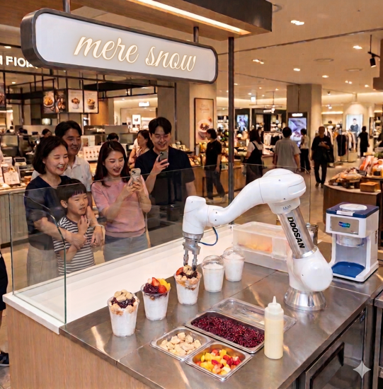
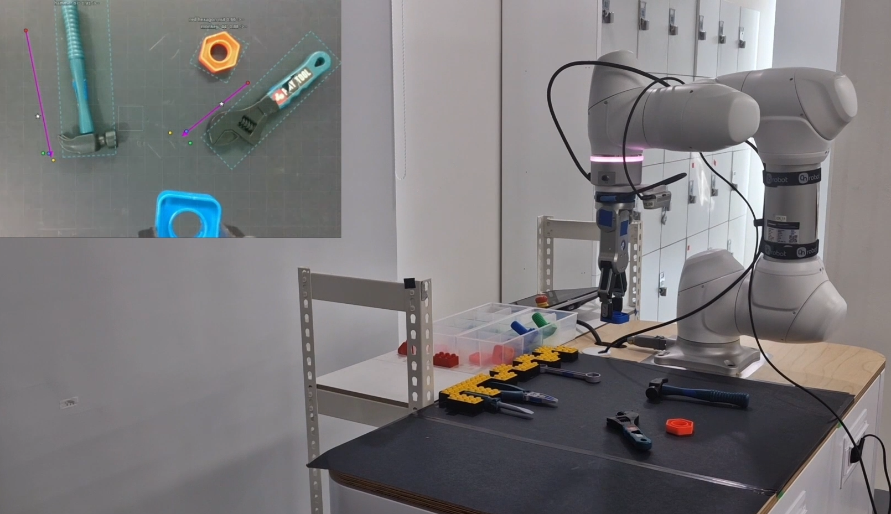
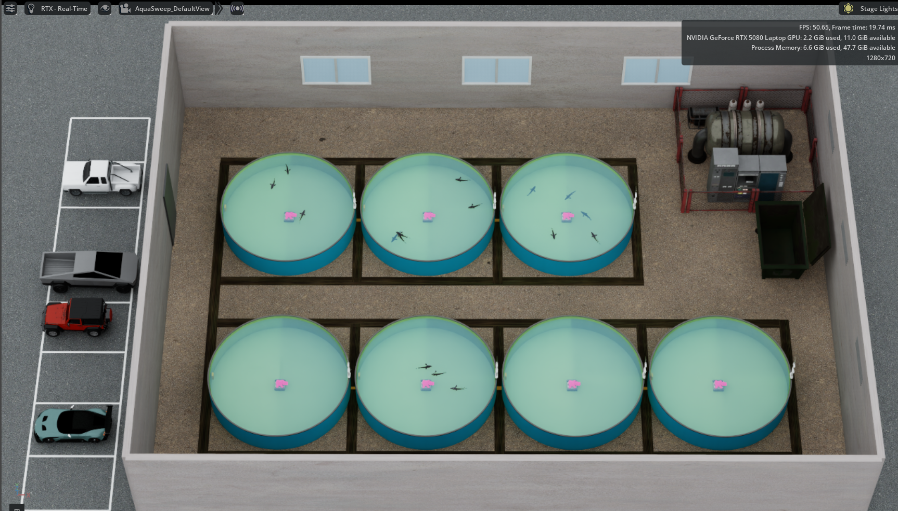
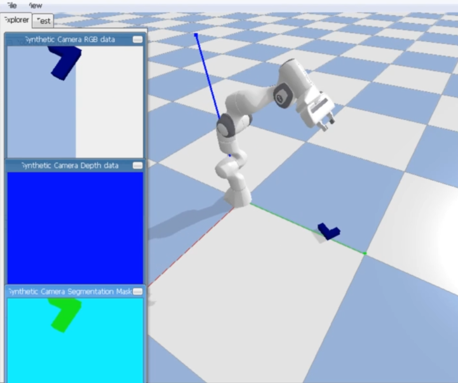
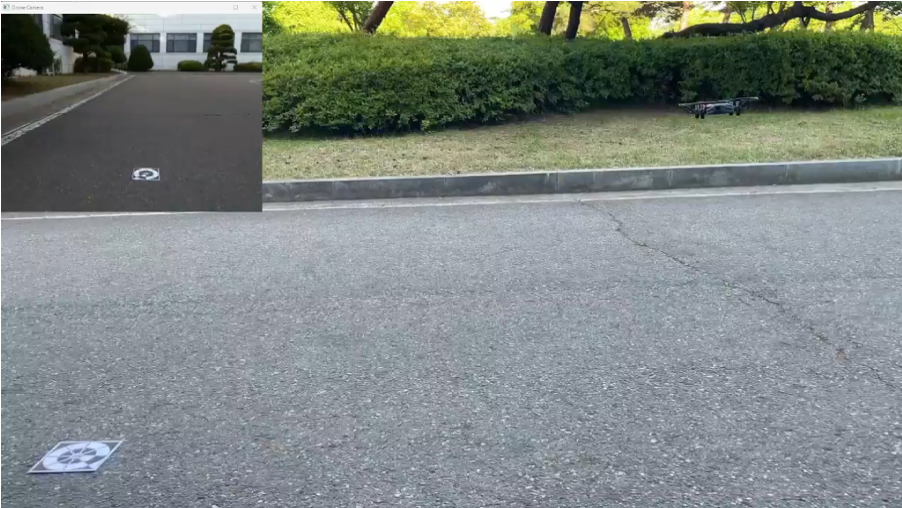

Projects
What I've built.

Full-stack collaborative robot system for automated shaved ice production. Web dashboard (Firebase + ROS2 bridge) controls a Doosan M0609 arm in real time, with handwriting trajectory generation via camera-to-world calibration.

Autonomous tool-organization robot using YOLOv8 OBB (Oriented Bounding Box) detection to identify and sort rotated tools. Integrated Gazebo simulation environment for validation before real-world deployment.

Autonomous aquafarm debris-cleaning robot with ROS2 Nav2 for area coverage, OpenCV-based foreign object detection, and a real-time web monitoring dashboard. Solved false-positive filtering and obstacle detection edge cases in murky water.

Nurse-assistant patrol robot on TurtleBot4 with Nav2-based ward navigation, autonomous room-rounding state machine (Mode A), and multi-robot rendezvous logic. My role: ward-patrol integration and Nav2 localization troubleshooting.

DQN-based reinforcement learning agent controlling a robot arm in PyBullet simulation. Implemented camera-to-world coordinate transform and depth normalization for 3D target localization from RGB-D input.

YOLO-based marker detection with camera calibration for precision drone landing. Achieved 11.5 cm simulation accuracy and 13.3 cm real-world accuracy. Covers full pipeline from calibration through distance estimation.